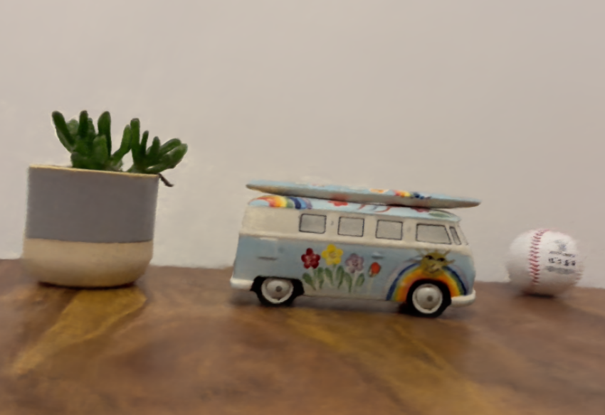
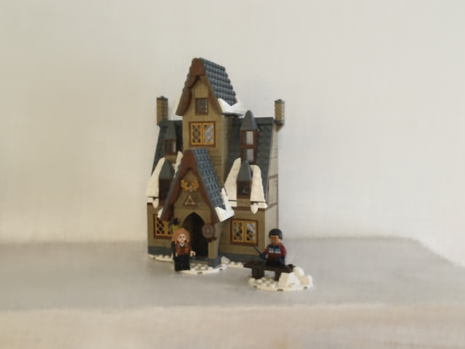
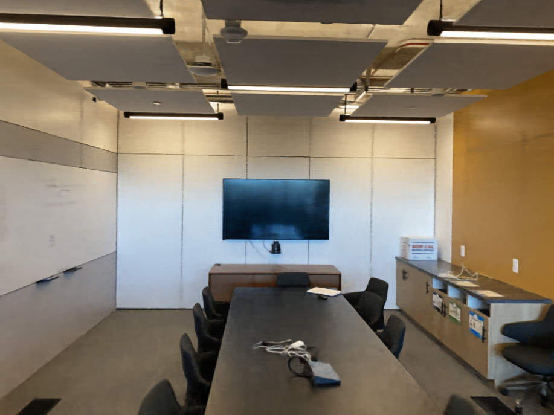

NeRFtrinsic Four: An End-To-End Trainable NeRF Jointly Optimizing Diverse Intrinsic and Extrinsic Camera Parameters


Paper (CVIU) open access

Preprint (arixv)

Code

Dataset
Abstract
Example on the iFF Dataset
Having the correct camera parameters is essential for NeRF. Our end-to-end optimzable approach learns the camera parameters and can optimize them. In the image of T1 we compare our appraoch with NerF--.
T1 one scene from iFF

Brick House from iFF

Room from LLFF

Architecture

Results for Novel View Synthesis
LLFF
PSNR
SSIM
BLEFF
PSNR
SSIM
iFF
PSNR
SSIM
Results for Camera Pose Estimation
LLFF
Rotation Error
Translation Error
Focal Error
iFF
Rotation Error
Translation Error
Focal Error
iFF Dataset

Citation
@article{schieber2024nerftrinsic,
title={Nerftrinsic four: An end-to-end trainable nerf jointly optimizing diverse intrinsic and
extrinsic camera parameters},
author={Schieber, Hannah and Deuser, Fabian and Egger, Bernhard and Oswald, Norbert and Roth,
Daniel},
journal={Computer Vision and Image Understanding},
pages={104206},
year={2024},
publisher={Elsevier}
}